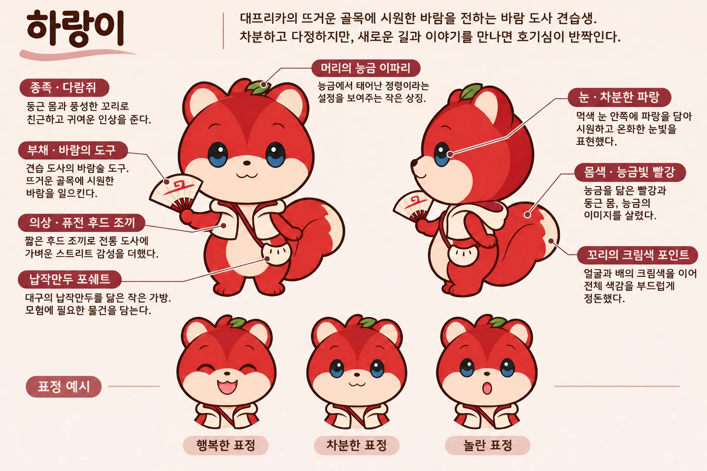
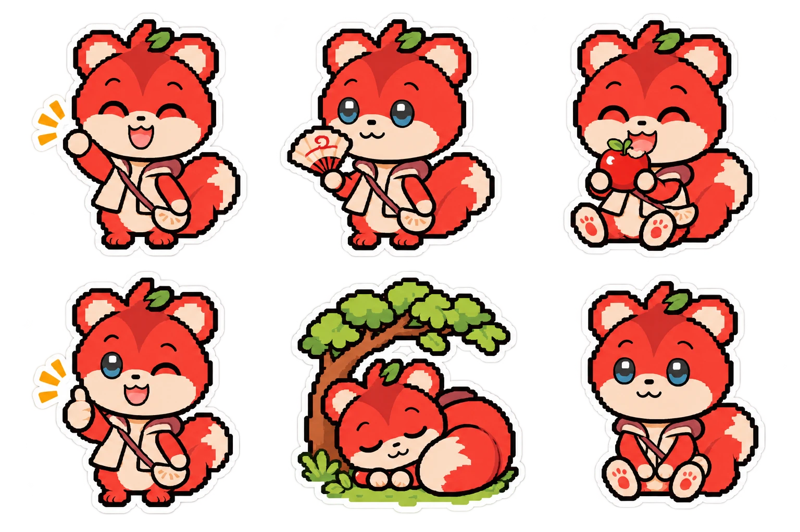

🌤️ 하랑이와 함께 오늘 날씨에 맞는 길을 찾아 걸어요
🥵 여름의 대프리카는 너무 뜨겁습니다.
🌳 그래서 날씨에 맞는 길을 대신 짜 드립니다.
근거: 대구지방기상청 분석, ytn.co.kr/_ln/0115_202607131021006792
근거: kbmaeil.com/article/20260709500236 (원자료 수치 확인 필요)
근거: 매일신문, plan/daeprica_hidden_quest_plan.md 9장
근거: research/painpoint/voc_classified.csv (요약문 기준, 전체 불편률 아님)
🎯 기존 스탬프 투어는 정해진 장소 목록을 따라갑니다. 오늘 날씨에 맞는 순서는 이용자가 직접 고민합니다.
| 구분 | 기존 스탬프 투어 | 대프리카 히든 퀘스트 |
|---|---|---|
| 🗺️ 순서 | 정해진 장소 목록 | 하랑이가 날씨·시간대·요일에 맞춰 짠 길(코스) |
| 🌡️ 날씨 | 이용자가 직접 확인 | 폭염이면 실내·그늘 먼저, 특보 시 야외 안내 중단 |
| ✅ 인증 | 도장 또는 앱 인증 | 방문 인증 (위치 또는 QR), 방탈출 느낌은 가볍게 |
| 📒 기록 | 스탬프 수집 | 날짜·장소·날씨가 자동으로 쌓이는 장부 |
퍼즐 풀이가 중심이 아닙니다.
방문하면 기록이 자동으로 쌓입니다.
실제 장소, 실시간 날씨, 굿즈로 잇습니다.
🐿️ "하랑이와 함께 오늘 날씨에 맞는 길을 찾아 걸어요."
| 사례 | 가져올 것 | 바꿀 것 |
|---|---|---|
| 📰 카카오 곳곳 | 매거진 번호 카드(도감), 산책빙고 12곳(단계형 보상), 혼잡 3단계 표시 | 대구 제휴를 먼저 확보 (현재 1곳) |
| 🛂 국가유산 방문자 여권 | 상시 참여, 완주 기념품 신청 | 도장 날인 → 디지털 인증 |
| 🎫 대구 스탬프로드 20 | 기존 앱(캐시워크) 인증 재사용 | 고정 목록 → 날씨·시간대 맞춤 순서 |
| 🌿 트랭글 착한탐방 | 안전·환경 행동에 주는 인증 보상 | 쉼터 체크인과 연결 (날씨 연동 사례는 찾지 못함) |
| ⛰️ 우오봉 | 배지 수집 | 경쟁·랭킹 → 협력과 안전 우선 |
| 🌍 몽촌토성·Escape the City | 도시를 무대로 한 미션형 게임 (AR+GPS 학습 / 팀당 약 29유로, 사업자 자료) | 장소 고정 → 날씨에 따라 바뀌는 길 |
기온·체감, 시간대, 요일, 위치
날씨 모드 결정
검수된 장소 DB에서 선택
하랑이가 문장으로 안내
| 날씨 | 길 구성 |
|---|---|
| 🌳 28℃ 미만 | 탐험: 골목·공원 야외, 최대 60분 |
| 🌿 28~33℃ | 그늘: 그늘 경로와 실내 구간 함께 |
| ❄️ 33℃ 이상 | 실내: 쉼터·박물관·카페·3호선 중심 |
| 🛑 폭염특보 | 안전: 야외 안내 중단, 쉼터·물 안내 |
| ☔ 호우·낙뢰 | 이동 보류: 실내·일정 변경 안내 |
| 길 | 시간 | 흐름 | 날씨 대응 |
|---|---|---|---|
| 🏮 코스 A (중구) | 30분 | 동성로 → 근대골목 → 약령시 박물관 → 서문시장 → 종점 | 폭염·한파 시 약령시 실내를 먼저 |
| 🚇 코스 B | 60분 | 반월당·동대구 → 3호선 탑승 → 청라언덕역·서문시장역 하차 → 종점 | 이동 대부분이 열차라 더위에 강함 |
더위와 한파에 무리가 없도록 끊어 줍니다.
모든 스테이션에 대체 장소를 둡니다.
짧은 일정에 맞춰 완결됩니다.
🔀 순서는 권장이고, 날씨와 혼잡에 따라 바꿔도 인증됩니다. (추천안, 팀 결정 전)
| 구분 | 기본 트랙 (스탬프 코스) | 미스터리 트랙 (가칭) |
|---|---|---|
| 🚶 내용 | 하랑이가 짠 길을 따라 장소를 방문 | 야외 방탈출 형식으로 장소마다 단서를 찾아 이동 |
| ✅ 인증 | 위치 또는 QR | 단서 풀이 (선택형 위주) |
| 👤 대상 | 가볍게 참여하는 이용자 | 더 몰입하려는 이용자 |
| 🛡️ 안전 | 야외 연속 15분 이하, 폭염특보 시 야외 단서 잠금, 풀이는 쉼터·실내에서 이어서 가능 | |

"찍었어요!
이 시간대 이 자리는
장부에 처음이에요.
한 칸 채웠네요~!"
"여기서 좀 쉴까요?
땀 닦고, 물 마시고요.
서두를 건 없어요!"
"오늘은 체감이 높아요.
실내 길로 바꿨어요.
무리하는 건 안 시킬 거예요!!"

| 운영 주체 | 인증 도구 | 거점과 보상 | 공개 수치 |
|---|---|---|---|
| 🛂 국가유산청 | 실물 여권 + 앱 | 76곳 (+특별 30곳), 기념품·키링 | 발급 63만 28권, 완주 1,146명 (2026.8 누적) |
| 🎫 대구문화예술진흥원 | 캐시워크 앱 | 20곳, 보상 방식 미확인 | 없음 |
| 🏘️ 대구 북구청 | 모바일 | 20곳, 6곳 이상이면 2만 원 상품권 (월 50명 추첨), 주민 제외 | 없음 |
| 🏙️ 구미시 | 전용 앱 | 23곳, 8곳+영수증 1만 원 이상이면 지역상품권 | 상반기 138명 |
| 🚉 국토교통부 | 자동 인증 앱 | 52곳, 4~32개 단계 보상, 영수증 이벤트 | 작년 1,526명 |
👉 지역 소비를 확인하는 곳은 구미와 국토부 둘뿐입니다. 방문 기록을 자동으로 집계하는 일이 빈칸입니다.
| 업체 | 제공 범위 | 가격·규모 |
|---|---|---|
| 🔲 큐알스탬프 (엠카) | QR·NFC·GPS·AR·퀴즈 인증, 리워드 게임 6종 | 정액 플랜 100만 원~, 직원 3명, 매출 약 5.4억 원 (2024) |
| 🎪 이벤터스 | 행사 플랫폼 안의 QR 스탬프, 모집·결과 리포트 | 베이직 무료, 직원 14명, 매출 비공개 |
| 🗺️ 퀘스투어 (메타비) | 셀프+맞춤 미션, QR/GPS, 상권 리포트 | 30만·200만·600만 원~ (인원 단계), 직원 4명, 매출 약 2.5억 원 (2022) |
| 🌐 리얼월드 | AI 스토리 분기, 대화형 NPC, 콘텐츠 실시간 변경 | 부산 티켓 정가 35,900원 (얼리버드 14,900원) |
| 🎮 플레이더월드 | 대구 동성로 야외 방탈출 〈멸망한 세계에서 방탈출〉 | 2022 텀블벅 120명 후원, 432만 6천 원 |
👉 차별점은 '날씨·운영 변경 → 대체 길 → 진행 유지'에 하랑이 이야기를 얹는 것이고, 파일럿으로 검증합니다.
| 판매 경로 | 고객 | 방식 |
|---|---|---|
| 🙋 민간 직접 판매 | 대구 시민·커플·친구·방탈출 이용자 | 디지털 팀권 (첫 가격 실험값 14,900원, 가설), 기간 한정 회차부터 |
| 🏛️ 지자체·재단 수주 | 구·군 관광·문화 사업, 관광기관 | 한 코스 단위로 기획·답사·제작·운영·리포트 견적 |
| 🎪 행사 대행사 납품 | 공공 행사를 수탁한 대행사 | 코스·미션 제작과 현장 운영 지원을 과업으로 견적 |
⚠️ 사례는 "있다"까지만 말합니다. 판매량·마진·구매 의사는 파일럿에서 검증합니다.
| 문제 | 대응 | 장 |
|---|---|---|
| 🔥 더위·쉼터 운영 시간 | 날씨 모드별 길, 쉼터 기준 시각·운영 시간 표기 | 5·6 |
| 🍂 가을 쏠림 | 6/21~9/23 여름 시즌 길 | 16 |
| 📊 대기·혼잡·운영 변경 | 운영 상태 반영, 대체 길 안내 | 5·9 |
| 🗺️ 고정 장소 목록 | 날씨·시간대·요일 맞춤 길, 자동 장부 | 3·4·8 |
| 🏢 도구 위주 시장, 성과 미공개 | 하랑이 이야기와 방문 기록 집계 | 9·10·14 |
🍎 하랑이와 함께 오늘 날씨에 맞는 길을 걷고, 능금 스탬프로 대프리카의 여름을 기록합니다.